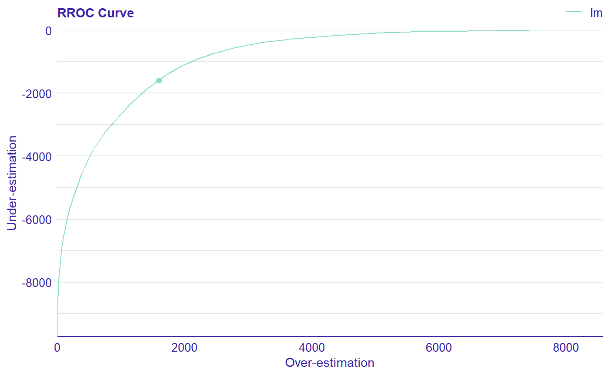
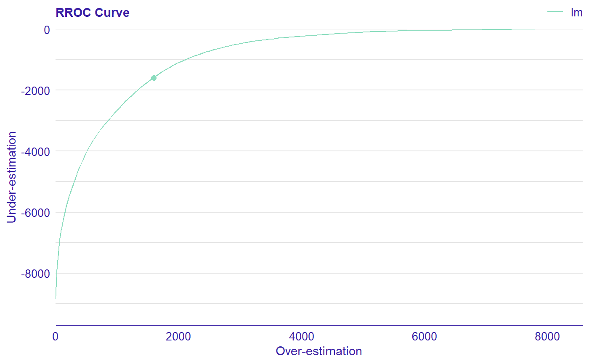
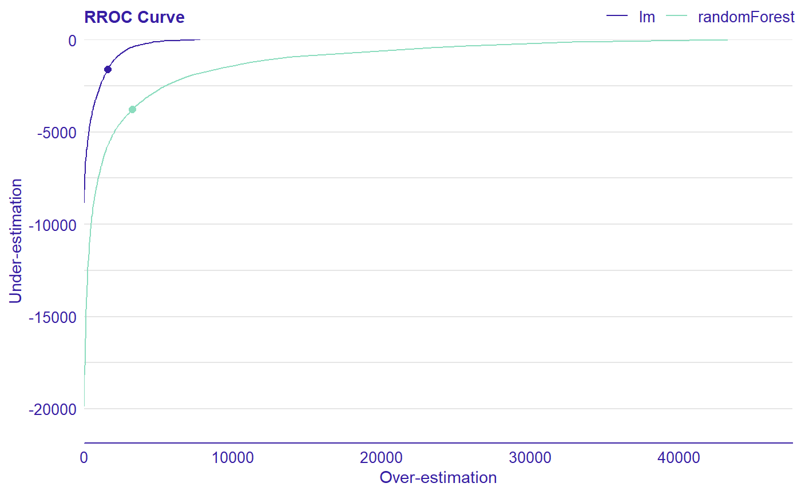

Regression Receiver Operating Characteristic (RROC)
The basic idea of the ROC curves for regression is to show model asymmetry. The RROC is a plot where on the x-axis we depict total over-estimation and on the y-axis total under-estimation.
plot_rroc(object, ...) plotRROC(object, ...)
Arguments
| object | An object of class 'auditor_model_residual' created with |
|---|---|
| ... | Other 'auditor_model_residual' objects to be plotted together. |
Value
A ggplot object.
Details
For RROC curves we use a shift, which is an equivalent to the threshold for ROC curves. For each observation we calculate new prediction: \(\hat{y}'=\hat{y}+s\) where s is the shift. Therefore, there are different error values for each shift: \(e_i = \hat{y_i}' - y_i\)
Over-estimation is calculated as: \(OVER= \sum(e_i|e_i>0)\).
Under-estimation is calculated as: \(UNDER = \sum(e_i|e_i<0)\).
The shift equals 0 is represented by a dot.
The Area Over the RROC Curve (AOC) equals to the variance of the errors multiplied by \(frac{n^2}{2}\).
References
Hernández-Orallo, José. 2013. ‘ROC Curves for Regression’. Pattern Recognition 46 (12): 3395–3411.
See also
Examples
dragons <- DALEX::dragons[1:100, ] # fit a model model_lm <- lm(life_length ~ ., data = dragons) # use DALEX package to wrap up a model into explainer exp_lm <- DALEX::explain(model_lm, data = dragons, y = dragons$life_length)#> Preparation of a new explainer is initiated #> -> model label : lm (default) #> -> data : 100 rows 8 cols #> -> target variable : 100 values #> -> predict function : yhat.lm will be used (default) #> -> predicted values : numerical, min = 585.8311 , mean = 1347.787 , max = 2942.307 #> -> residual function : difference between y and yhat (default) #> -> residuals : numerical, min = -88.41755 , mean = -1.489291e-13 , max = 77.92805 #> A new explainer has been created!# validate a model with auditor library(auditor) mr_lm <- model_residual(exp_lm) # plot results plot_rroc(mr_lm)library(randomForest) model_rf <- randomForest(life_length~., data = dragons) exp_rf <- DALEX::explain(model_rf, data = dragons, y = dragons$life_length)#> Preparation of a new explainer is initiated #> -> model label : randomForest (default) #> -> data : 100 rows 8 cols #> -> target variable : 100 values #> -> predict function : yhat.randomForest will be used (default) #> -> predicted values : numerical, min = 759.0654 , mean = 1342.3 , max = 2459.956 #> -> residual function : difference between y and yhat (default) #> -> residuals : numerical, min = -193.265 , mean = 5.486898 , max = 438.4651 #> A new explainer has been created!